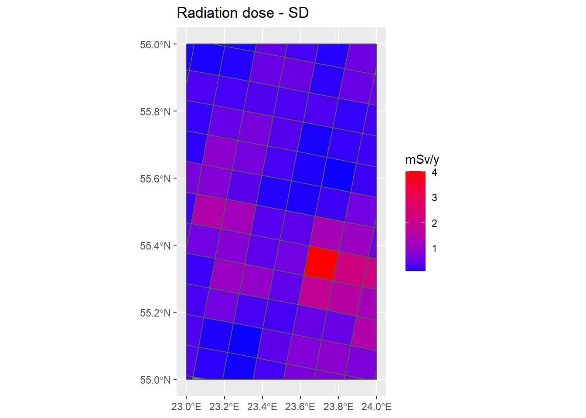
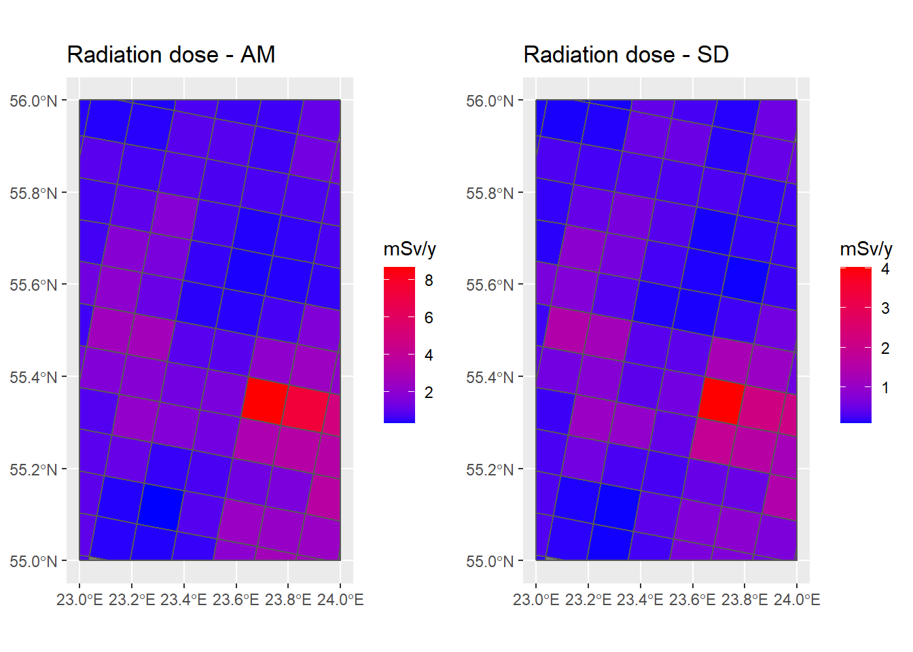

Chapter 5 Dose map
summary(Grids_10km_Sum$OK_AM)#> Min. 1st Qu. Median Mean 3rd Qu. Max. NA's
#> 11.89 24.73 37.41 56.30 74.17 340.36 1summary(Grids_10km_Sum$OK_SD)#> Min. 1st Qu. Median Mean 3rd Qu. Max. NA's
#> 0.4458 4.8030 10.7934 17.5544 19.8067 132.7462 3## New dataframe with AM and SD ----
Dose <- Grids_10km_Sum %>% transmute(Id = Id,
Rn_AM = OK_AM,
Rn_SD = OK_SD,
)## Dose [mSv/y] = CRn [Bq/m3] * FE * FO * TY [h/y] * FD [mSv / Bq.h.m-3]
# Uncertainty MC simulations
nsim <- 100
MC_Sim <- matrix(NA, nrow = length(Dose$Rn_AM), ncol = nsim)
TY <- 8760
for (i in 1:nsim) {
Rn <- truncnorm::rtruncnorm(length(Dose$Rn_AM), a = 0, b = Inf, mean = Dose$Rn_AM, sd = Dose$Rn_SD) # truncated: Rn > 0
FE <- rlnorm(1, meanlog = log(0.4), sdlog = log(1.15))
FO <- rnorm(1, 0.8, 0.03)
FD <- rnorm(1, 9e-06, 1.5e-06)
MC_Sim[,i] <- Rn * FE * FO * TY * FD
}
MC_Sim <- as.data.frame(MC_Sim)
MC_Sim$Id <- Dose$Id
MC_Sim$Dose_AM <- rowMeans(MC_Sim[,1:nsim])
MC_Sim$Dose_SD <- apply(MC_Sim[,1:nsim], 1, sd)## Add AM and SD of the MC simulations to the dose table ----
Dose <- left_join(Dose %>% as.data.frame(),
MC_Sim[c("Id","Dose_AM","Dose_SD")] %>% as.data.frame,
by = "Id")
Dose <- Dose %>% st_sf(sf_column_name = "geometry.x")## Dose map ----
summary(Dose)#> Id Rn_AM Rn_SD Dose_AM Dose_SD
#> 340 : 1 Min. : 11.89 Min. : 0.4458 Min. :0.2960 Min. :0.09389
#> 341 : 1 1st Qu.: 24.73 1st Qu.: 4.8030 1st Qu.:0.6017 1st Qu.:0.21984
#> 361 : 1 Median : 37.41 Median : 10.7934 Median :0.9095 Median :0.39444
#> 362 : 1 Mean : 56.30 Mean : 17.5544 Mean :1.4174 Mean :0.55571
#> 363 : 1 3rd Qu.: 74.17 3rd Qu.: 19.8067 3rd Qu.:1.8008 3rd Qu.:0.63535
#> 364 : 1 Max. :340.36 Max. :132.7462 Max. :8.6532 Max. :4.02132
#> (Other):87 NA's :1 NA's :3 NA's :3 NA's :3
#> geometry.x
#> POLYGON :93
#> epsg:4326 : 0
#> +proj=long...: 0
#>
#>
#>
#> P_Dose_AM <- ggplot() +
geom_sf(data = Country) +
geom_sf(data = Dose, aes(fill = Dose_AM)) +
scale_fill_gradient(name = "mSv/y", low = "blue", high = "red") +
ggtitle("Radiation dose - AM")
P_Dose_AMP_Dose_SD <- ggplot() +
geom_sf(data = Country) +
geom_sf(data = Dose, aes(fill = Dose_SD)) +
scale_fill_gradient(name = "mSv/y", low = "blue", high = "red") +
ggtitle("Radiation dose - SD")
P_Dose_SD
grid.arrange(P_Dose_AM, P_Dose_SD, nrow = 1, ncol = 2)